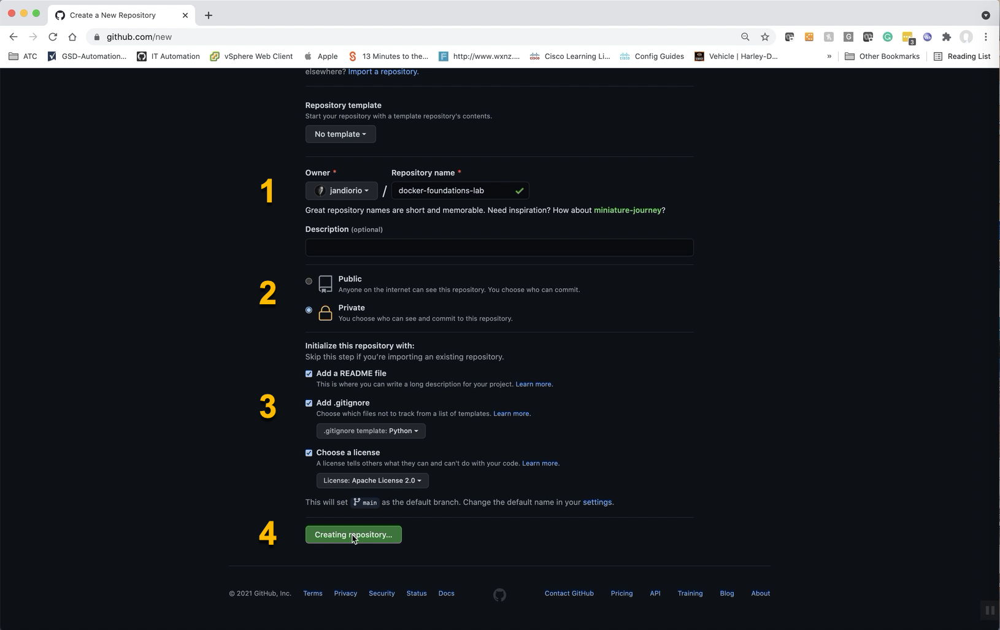

Setup: Create and Open a New Project
This section will guide you through creating a new repository on GitHub and opening that new repository in Visual Studio Code.
Create a Repo on GitHub
All of your development projects should start with creating a repository to store you hard work in a safe place.
-
NAVIGATE to GitHub
-
CLICK the New button next to Repositories

-
NAME the repo docker-foundations-lab
-
SET the repo to Private

- CLICK Add a README file
- CLICK Add .gitignore and SELECT Python
- CLICK Choose a license and SELECT Apache License 2.0
- CLICK Create Repository

Now that you have created your new repository on GitHub you can move forward with opening this new project in Visual Studio Code.
Opening Your Repo in Visual Studio Code
There are two ways to approach this step:
- Manually clone the repo from the terminal
- Use the functionality built into Visual Studio Code
Manually Clone Method
-
OPEN a new Terminal
-
NAVIGATE to your repo on GitHub
-
CLICK the Code button
-
SELECT the transport (HTTPS or SSH)
-
CLICK the Copy icon

-
PASTE
git cloneplus that string into your TerminalExample
SSH
git clone git@github.com:jandiorio/docker-foundations-lab.gitHTTPS
git clone https://github.com/jandiorio/docker-foundations-lab.gitImportant
The command above will clone down the repository creating a subfolder with the name of the repo in the folder where you ran the command.
-
OPEN the new Folder in Visual Studio Code using Open Folder
Clone and Open Directly in Visual Studio Code
-
OPEN a new Visual Studio Code Window
-
CLICK the Explorer icon

-
CLICK Clone Repository

-
PASTE repository string

-
SELECT the parent directory
Tip
I have a folder named development where all of my development projects are located.
-
CLICK Open in the dialog prompt to Open the Repository

What's Next
 Now you are ready to get to the "meat" of the tomato...next you will walk through the basics of building a
Now you are ready to get to the "meat" of the tomato...next you will walk through the basics of building a Dockerfile.